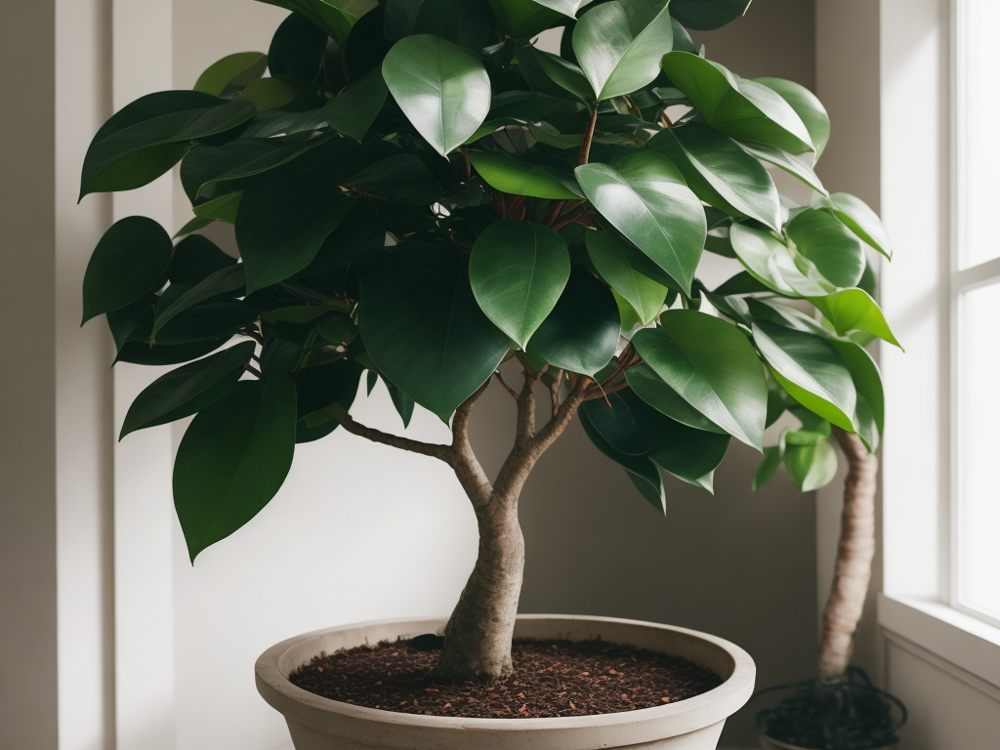

Фикусы
Фикусы — популярные комнатные растения, которые приносят не только красоту в интерьер, но и способствуют улучшению качества воздуха в вашем доме. Вот несколько ключевых моментов о фикусах, чтобы вы могли лучше ухаживать за этими замечательными растениями.
Фикусы происходят из тропических и субтропических регионов Азии, Африки и Австралии. Эти растения привыкли к теплому и влажному климату, что делает их отличным выбором для домашних условий.
Существует множество разновидностей фикусов, включая популярные Фикус Эластик (резиновое дерево), Фикус Бенджамина (декоративная смоковница) и Фикус Лира (фикус-лира).
Фикусы несут в себе положительную энергию и способны создавать уют в вашем доме. Их зеленые листья не только очищают воздух, но и способствуют созданию спокойной и уравновешенной атмосферы в помещении. Разместите фикусы в вашем доме, чтобы привнести свежесть и живую энергию в каждый уголок.
Фикусы являются не только зелеными попутчиками, но и прекрасными декоративными элементами. Их разнообразие форм и размеров делает возможным выбор именно того вида, который идеально впишется в интерьер вашего дома. От элегантного Фикуса Бенджамина до капризного Фикуса Эластик — каждый вид приносит свою неповторимую красоту.
Фикусы, привезенные из разных уголков планеты, часто несут в себе символическое значение. Они могут быть оберегом, символом изобилия или просто даром природы. У каждого вида фикуса есть своя история и значение, что делает их не только растениями, но и уникальными рассказчиками.
Уход за фикусом:
- Освещение: Фикусы предпочитают яркое, но рассеянное светлое освещение. Избегайте прямых лучей солнца, чтобы избежать ожогов листьев.
- Полив: Умеренный полив подходит большинству видов фикусов. Позвольте почве высохнуть между поливами.
- Температура: Фикусы предпочитают теплый климат. Избегайте резких перепадов температур и холодных сквозняков.
- Влажность: Обеспечьте умеренную влажность воздуха. Регулярно опрыскивайте листву в период сухости.